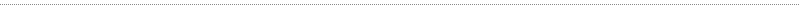
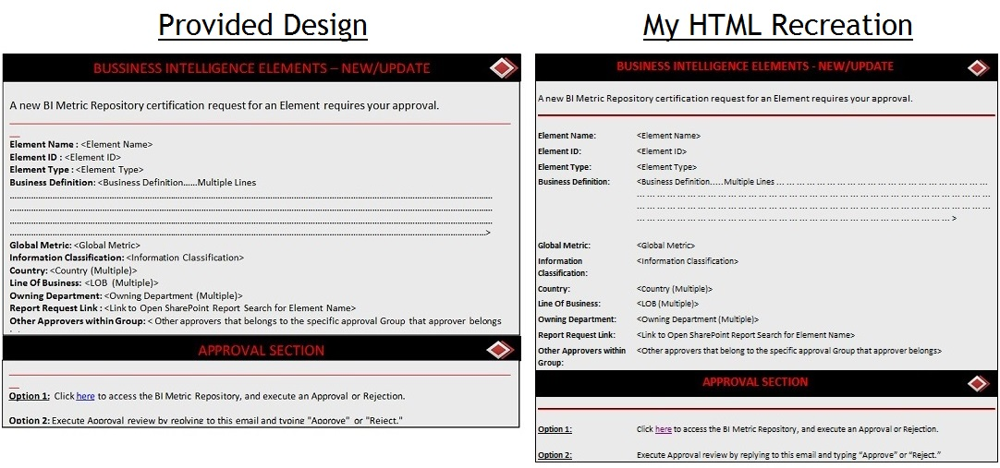

Jobs & Internships
GVSU Web Development Team



I currently work on the Web Development Team at Grand Valley as a student web developer. I create and update sites for clients which can be anything from making a few small text changes on a form to reworking a system.
Mercedes-Benz Financial Services
I worked as an intern in the IT department at Mercedes-Benz Financial Services the summer after I graduated high school. It was a six-week program in which I rotated around different sections in IT including project management, shared services, information technology infrastructure, security and web development. I also toured Detroit Diesel to see where they manufactured engines for trucks and volunteered at the Detroit Institute of Arts.
|
 |
|
While working in the Shared Services department, I replicated designs that my supervisors gave me in image format to HTMl/CSS code for use in the company. Above is one example of a business intelligence form that I made in Notepad++. |
|
|
|
Another department I worked in was Web Development in which employees there updated and handled issues with the MBFS website. In order to teach me more about what they do, my supervisor came up with different jQuery projects for me to try. These included making text change color of text upon click and making a moving, color-changing div. On the final day in this department, I surprised my supervisor with a PacMan game that I created using jQuery. Once the page is loaded, a timer at the bottom starts rolling. The user's task is to click on all of the ghosts as fast as possible and then press the "Finish" button to stop the timer. A successful click is indicated by the colored ghost turning into a blue, scared ghost. If the user is not satisfied with their time or wants to challenge a friend, they can press the "Retry" button to refresh the game. |